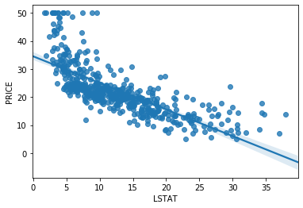
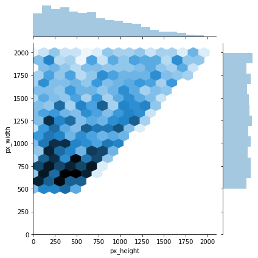
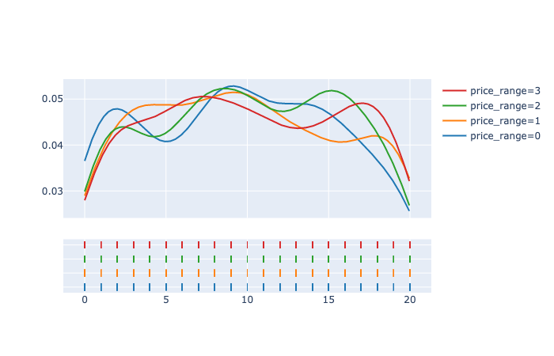
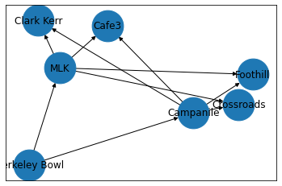

1 / 7

Analyzed relation between iris type and petal length using Python and Panda
2 / 7

Used NumPy and Panda to do linear regression and estimate the price of a house based on different attributes. In this graph, it is comparing price to the % lower status of the population
3 / 7

Used NumPy, Panda and Seaborn to create multiple kinds of graphs that classify phone prices. Here, we have a jointplot
4 / 7

Used NumPy, Panda and Seaborn to create multiple kinds of graphs that classify phone prices. Here, we have a distribution plot
5 / 7

Used NumPy, Panda and Seaborn to create multiple kinds of graphs that classify phone prices. Here, we have parallel categories
6 / 7

Used NumPy, Panda and Seaborn to create multiple kinds of graphs that classify phone prices. Here, we have a 3D scatterplot
7 / 7

Used NetworkX to create networks based on cost, capacities, and demands